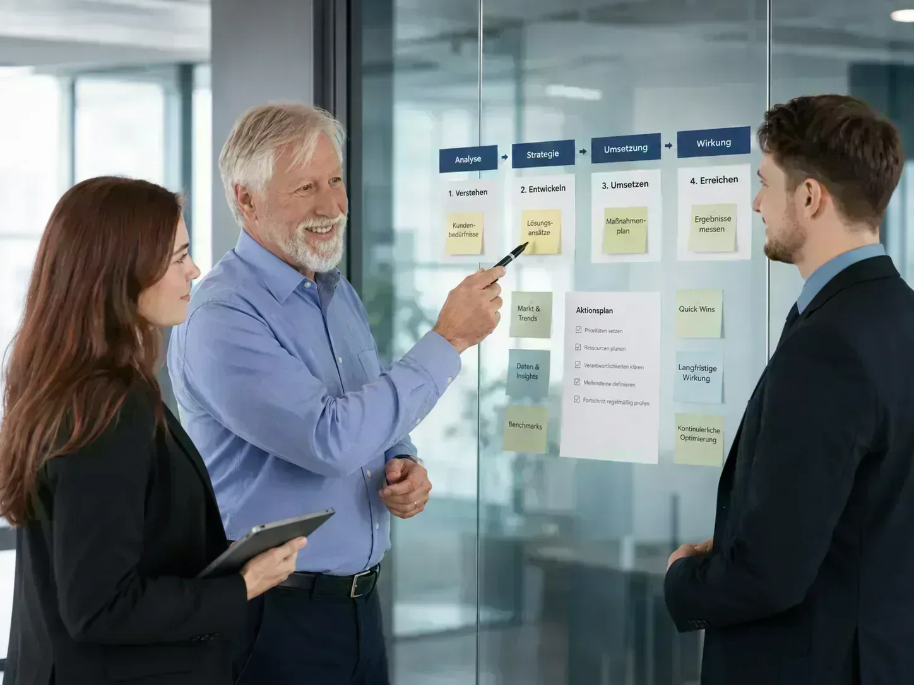

ÜBER BERATERIUM
Warum es Beraterium gibt
Risiken verstehen sollte kein Privileg großer Konzerne sein. Wir bringen professionelles Risikomanagement dorthin, wo es bisher gefehlt hat: in den Mittelstand, zu Startups und Solo-Selbstständigen.
Eine Methode, die zur Realität von Unternehmern passt
Viele Unternehmer wissen, dass Risiken existieren. Aber nur wenige wissen wirklich, welche Risiken für ihr Unternehmen die größten sind.
Klassische Risikomanagement-Methoden sind oft für Konzerne gemacht: komplex, theoretisch und aufwendig. Für mittelständische Unternehmen, Startups oder Kleinunternehmen passen sie selten zur Realität.
Beraterium ist aus genau dieser Lücke entstanden. Wir haben eine Methode entwickelt, mit der Unternehmen gemeinsam mit ihren Mitarbeitenden in kurzer Zeit ein klares Bild ihrer wichtigsten Risiken erhalten – verständlich, praxisnah und ohne Bürokratie.
WOFÜR WIR STEHEN
Konzern-Erfahrung, Start-up-Spirit, echte Augenhöhe
-
Konzern-Erfahrung für alle
Was bisher nur großen Unternehmen zur Verfügung stand, machen wir für Startups, KMU und kleine Unternehmen verständlich, erschwinglich und einsatzbereit.
-
Mensch vor System
Im Mittelpunkt steht der Mitarbeiter, nicht das Tool. Wir führen Analysen mit den Menschen durch – nicht über ihre Köpfe hinweg. So entstehen realistische Ergebnisse und echte Akzeptanz.
-
Wirkung vor Perfektion
Lieber eine gute Schätzung als eine perfekte Rechnung, die nie gemacht wird. Wir suchen nicht die meisten Maßnahmen – sondern die richtigen.
DIE GRÜNDER
Zwei Perspektiven, eine Mission
Till und Peter haben sich über soziale Netzwerke kennengelernt — unterschiedliche Wege, eine gemeinsame Überzeugung: Risiken sind keine Bedrohung, sondern eine Chance zur Weiterentwicklung. Aus diesem Gespräch wurde Beraterium.
-
Peter Münstermann
Über 20 Jahre DAX-Konzern — Informationsschutz, IT-Sicherheit und Risikomanagement bis zur Vorstandsebene. Seine Erkenntnis: Nicht die Technik, sondern die Menschen entscheiden über Sicherheit.
-
Till Manfred Blania
Startups, Forschung, Personalentwicklung — mehrfacher Gründer und Ökonom. Mit eigener Analysemethode erkennt er früh, wo Teams blockiert sind und Kultur trägt.
Peter ruhig, strukturiert, erfahren. Till mutig, verändernd, immer auf der Suche nach der Chance im Risiko. Zusammen: Konzern-Erfahrung mit Start-up-Spirit — auf Augenhöhe.
MEHR ALS BERATUNG
Aus Erkenntnissen werden Schritte
Im Gegensatz zu Facebook-Gruppen, offenen Foren oder LinkedIn ist RisikoRadar ein geschlossener Club: Zugang nur über Empfehlung oder Bewerbung. Kein stilles Mitlesen, kein Network-Marketing — sondern geprüfte Experten, die wirklich beitragen. Ein einzelner Berater deckt vielleicht 80 % ab; Risiken hängen aber zusammen — IT, Arbeitsschutz, Führung, DSGVO. In RisikoRadar arbeiten mehrere Experten an einer Lösung. Kunden erhalten einen kostenfreien Jahreszugang.
RisikoRadar entdecken →
„Beraterium ist ein Denkraum für Unternehmer, in dem Risiken sichtbar werden und bessere Entscheidungen entstehen."
Die Menschen hinter Beraterium
-

Till Manfred Blania
Verbindet Wirtschaft, Personalwesen und Risikomanagement mit Erfahrung aus eigenen Start-ups.
-

Peter Münstermann
20 Jahre Konzern-Erfahrung – macht Risikomanagement greifbar und praktisch umsetzbar.
-

Aleksandra Polosukhina
Marketing- und PR-Expertin – stärkt Teams durch Kommunikation und Employer Branding.
-

Torsten Walter Helbig
Finanzberater in Chemnitz – entwickelt robuste Cashflow-Architekturen für nachhaltige Sicherheit.
-

Joachim Lau
Textil-Experte mit über 20 Jahren Branchenerfahrung – mobilisiert Teams für echte Optimierung.
Häufige Fragen zu Beraterium
Was ist Beraterium?
Beraterium macht professionelles Risikomanagement für KMU, Startups und Solo-Selbstständige zugänglich — verständlich, praxisnah und ohne Konzern-Bürokratie.
Für wen ist Beraterium gedacht?
Für Geschäftsführer, Gründer und Solo-Selbstständige, die wissen wollen, welche Risiken ihr Unternehmen wirklich treffen könnten — bevor sie teuer werden.
Was unterscheidet Beraterium von klassischer Beratung?
Wir liefern kein PowerPoint zum Ablegen: strukturierte Risikoanalyse in Euro, moderiert mit Ihrem Team, mit klarer Umsetzung — selbst, mit Partnern oder über RisikoRadar.
Lernen wir uns kennen.
Im kostenlosen Erstgespräch zeigen wir Ihnen, wie Sie Ihre größten Risiken sichtbar machen – in 30 Minuten, ohne Verpflichtung.
Erstgespräch buchen